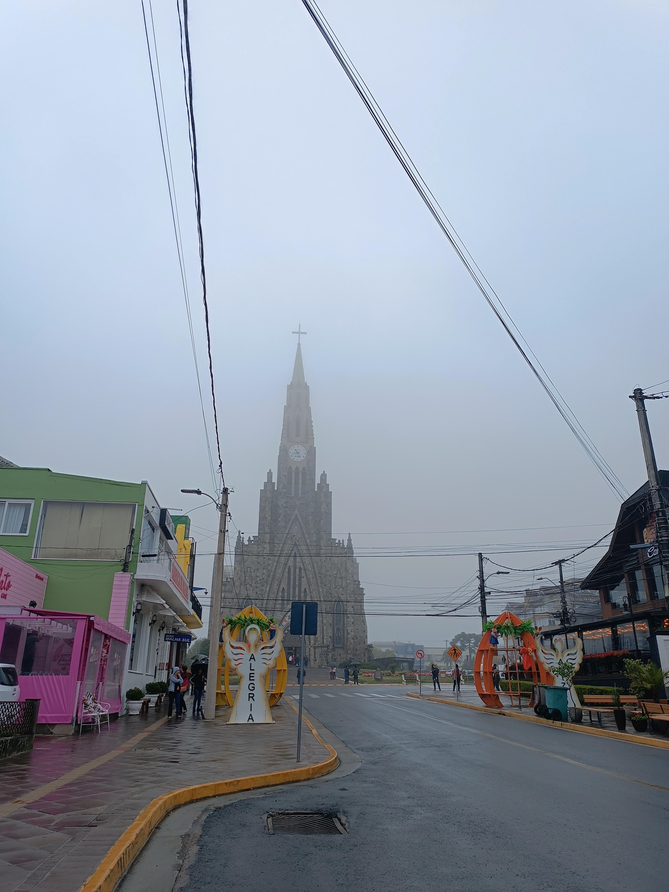
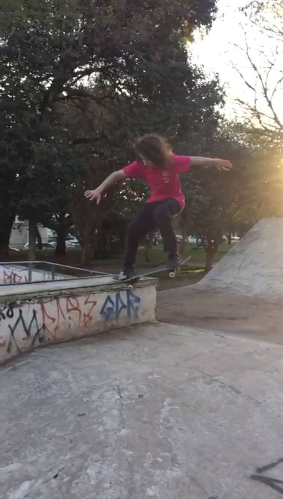
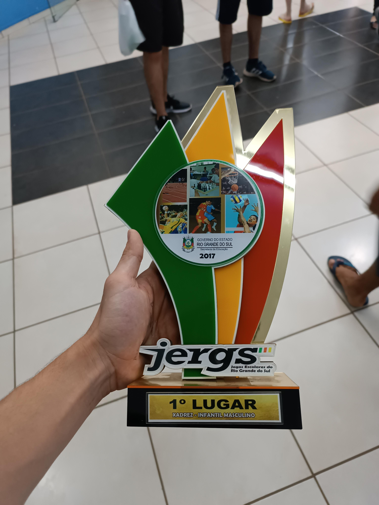

Natural de Palmeira das Missões, tenho 20 anos e atualmente moro em Passo Fundo. Após concluir o ensino médio me mudei para Gramado onde fiquei por um ano e meio trabalhando. Após me aventurar um pouco decidi que começaria uma faculdade, entrei este ano e já com o pensamento de entrar neste mundo da tecnologia.
Gosto muito de esporte num geral, hoje em dia faço academia e muay thai, mas quando criança andava muito de skate e jogava xadrez, onde conquistei muitos títulos jogando.
Confira meu GitHub


